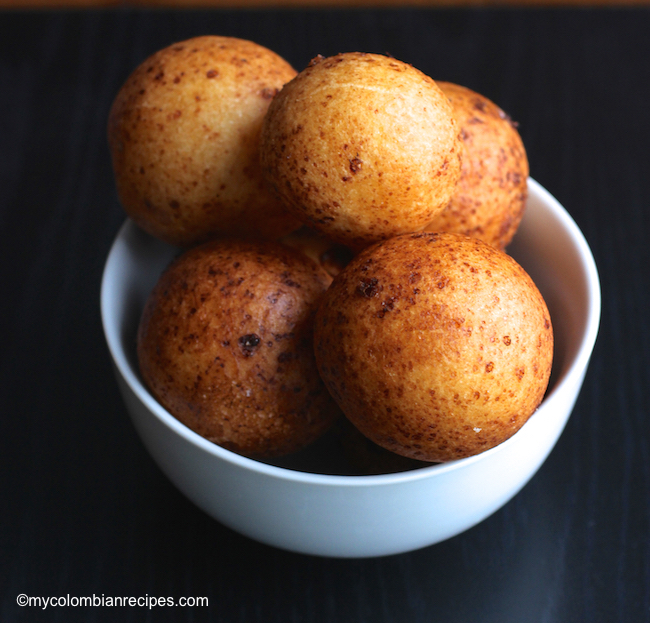

1. Place all the ingredients, except the oil in a medium bowl and mix well with your hands until you get a soft dough and form balls.
2. In a very deep pot, heat the vegetable oil at 300°F. Carefully place the balls in the hot oil. Fry until golden brown, about 3 to 4 minutes.
3. Remove from the oil and drain on a plate covered with paper towels. Serve.